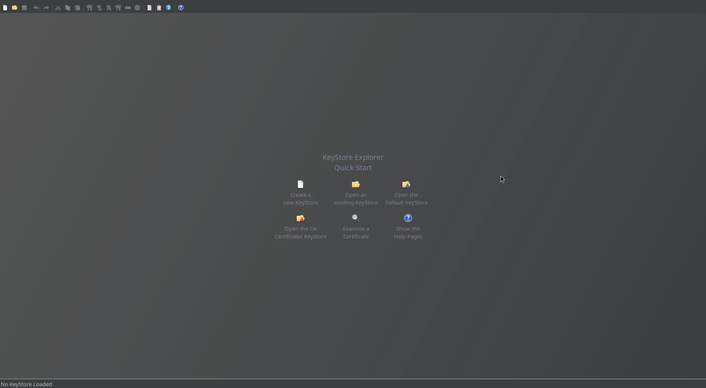
OPC UA : Client certificate creation
Below tutorial will teach you how to create client certificate for use within production environments. This tutorial focuses on preparation of configuration. It does not dive in X.509 and PKI details nor specifics of any OPC-UA server.
The Apache PLC4X client, as many other UA clients is able to create ad-hoc certificate for communication. While it softens entry bearer for many, it creates also a gap when with secured environments, which control certificate chains.
There are several ways on how to organize certificates. In this little tutorial we will use open source tool called KeyStore Explorer, referred herein as KSE. This tool allows to create files which can be used as a cryptographic keystore for Java-based programs but not only. One of nice things which Java runtime introduced, was change of default keystore format from JKS (Java KeyStore) to PKCS#12.
Creating self-signed certificate using KSE
Install the tool using the way which is valid for your operating system, then open the tool.
Entire process can be observed in below short screen capture:
Step by step operations are.
-
Navigate to or press CTRL+N to create new keystore.

-
Pick PKCS#12 as desired store format.
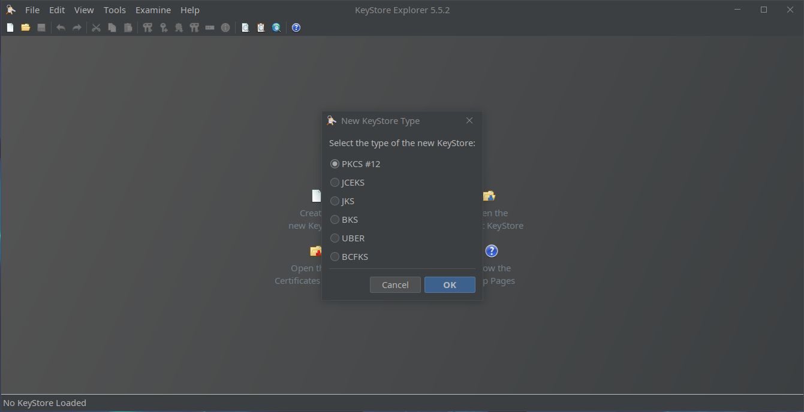
-
Navigate to or press CTRL+G:

-
Decide on key type (RSA, DSA, EC) and its size. RSA is a fairly common, confirm key size and click OK
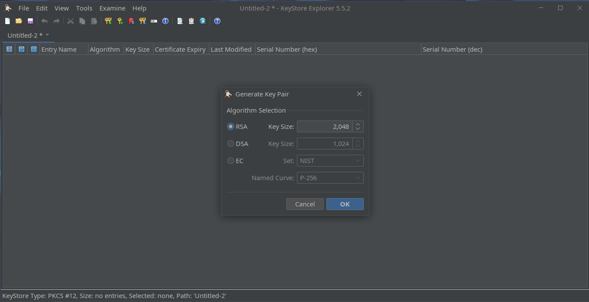
-
KSE will ask you about certificate details
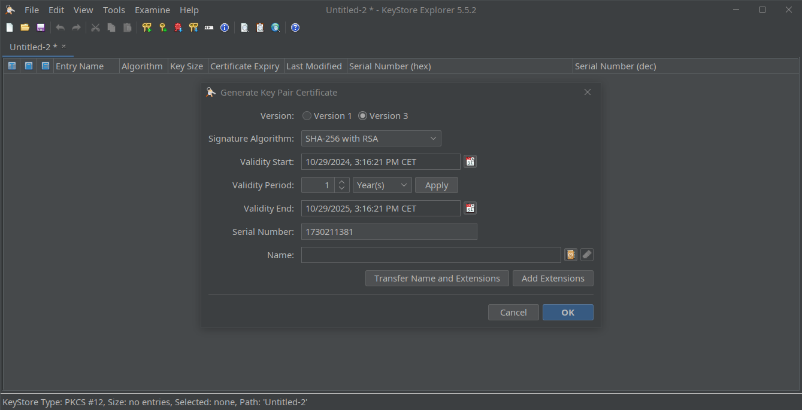
-
Go to
Namefield and click little phone book icon and click it. You will be able to specify common name (CN), organization unit (OU) and other fields, and confirm with OK
-
Click Add Extensions, which is located below
Namefield (you will again see step 5 window), it will open next popup.
-
Click Use Standard Template, select CA, then click OK.
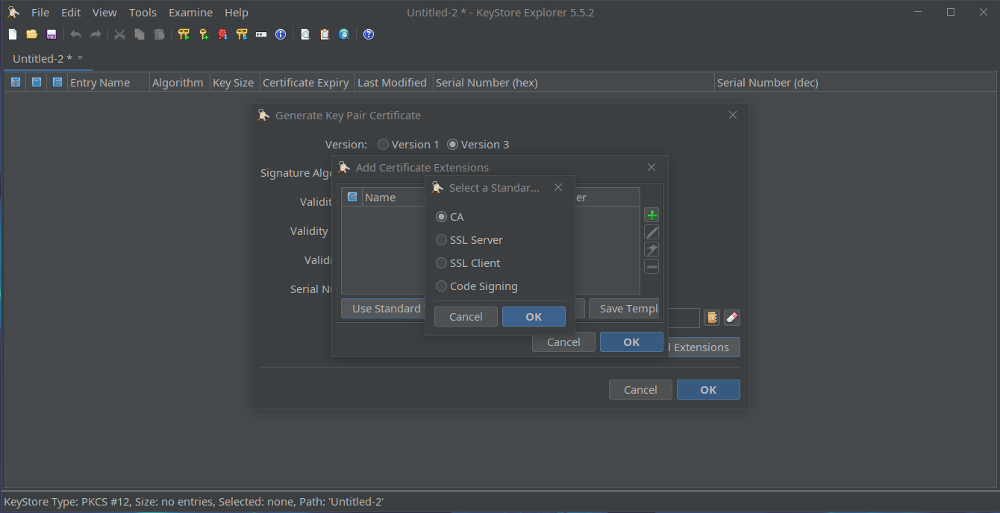
-
This will fill extensions with few rows, but do not close this window yet.

-
Click + next to the list, and select
Subject Alternative Name, then click OK.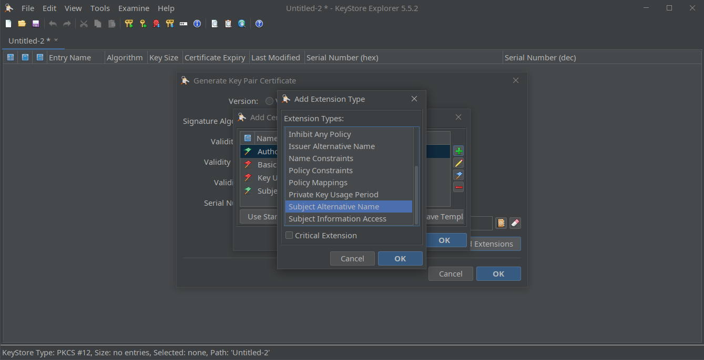
-
You will see again window with list, click + next to it.
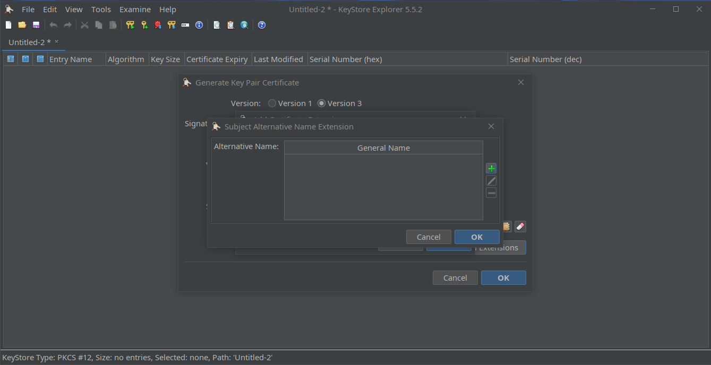
-
Select
URI, and type client identifier inGeneral Name Valuefield (i.e.urn:my:plc:client), and confirm via OK.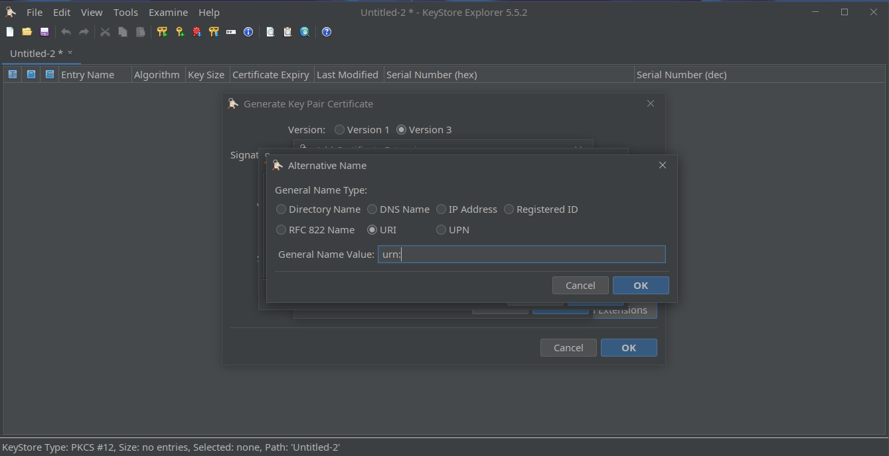
-
Click OK to close certificate extensions prompt.
-
Click OK to finish certificate creation.
-
Enter key pair alias and confirm with OK.

-
Enter private key password, confirm it in second field and click OK.
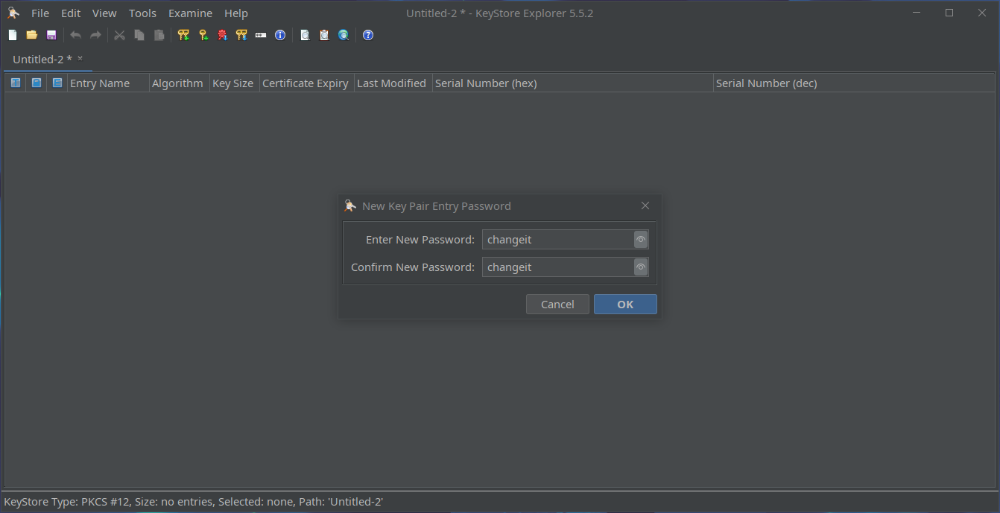
-
Upon completion of these steps you should be presented with "Key Pair Generation Successful" message.
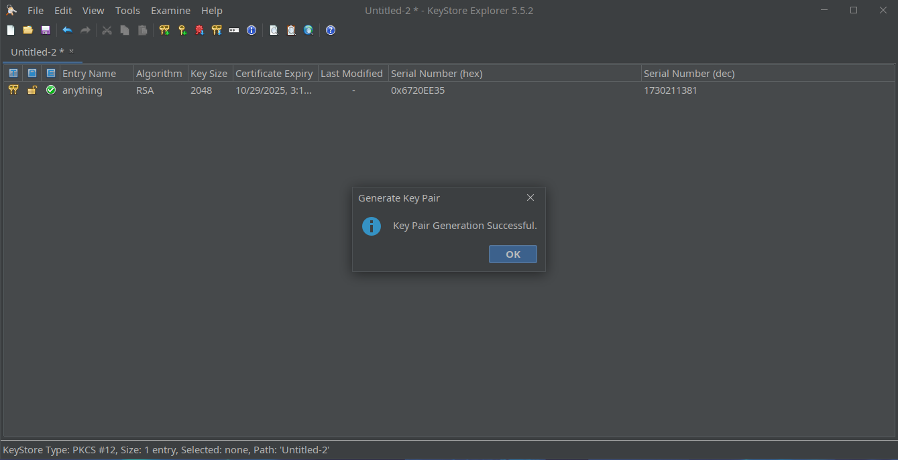
-
Navigate to or press CTRL+S to save keystore.
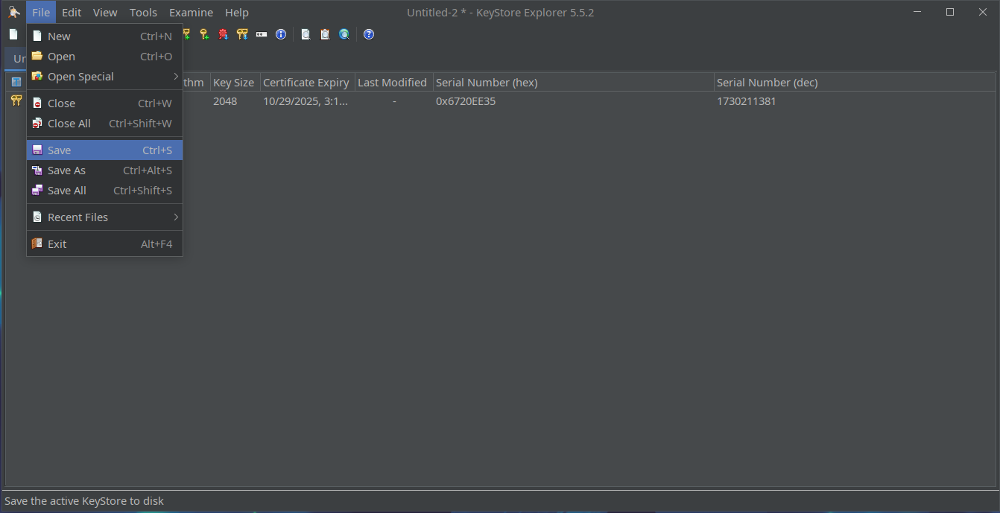
-
Enter keystore password, for use within Java it must be same as private key password.
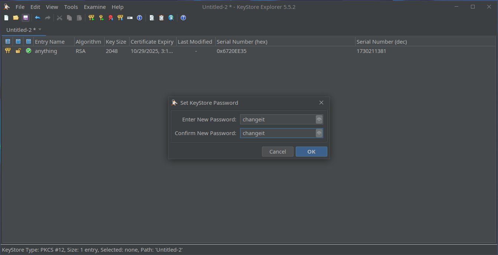
-
Specify file location.
-
Close KSE, your client private key and certificate is ready for use.
Usage within OPC UA PLC4X client
For detailed use of options used to configure client please refer to documentation of Apache PLC4X OPC-UA driver. Please remember that keystore must be readable by your program. In case if you are not certain what is working directory of your program, specify full path to keystore.